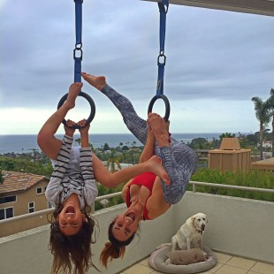
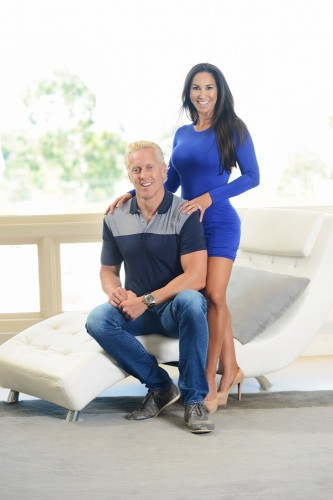

Natalie Jill
Overcoming Doubt in Network Marketing to Find Success
Congratulations, Isagenix Millionaire No. 196, Natalie Jill H.!
For years, Natalie Jill used and loved the Isagenix products, but as a successful businesswoman managing her own fitness brand, she had no interest in the business opportunity.
“I didn’t want to endorse one particular product, and I especially didn’t want the negative vibe that I thought was associated with network marketing,” she remembers.
As a licensed master sports nutritionist and functional fitness trainer, national best-selling author, and the creator of several award-winning DVDs, Natalie Jill didn’t want anything to hurt the brand she had worked so hard to develop.
“I didn’t want to confuse my audience,” she says. “I had my own nutrition programs and supplement deals, and I didn’t want to add anything else.”
Then Natalie Jill met Isagenix Millionaire Herb C. and his family. Herb was able to open her eyes to the fact that she could share Isagenix while continuing to run her business without changing her brand.
“He appreciated how I felt about network marketing, and understood me and my audience,” she says. “He showed me that I could potentially create a residual income with Isagenix that could actually help my personal brand.”
Natalie Jill trusted Herb and slowly began sharing Isagenix.
Help in Unexpected Ways
“I wasn’t public with my audience about it for a long time, and initially I treated my Isagenix business and my brand as two separate things,” she explains.
Rather than introducing Isagenix to her entire audience right away, Natalie Jill was more comfortable starting small, and approached only a handful of friends at first.
“I didn’t want to be cheesy about sharing Isagenix, I wanted to be very real with both my audience and my friends,” she says.
Soon, Natalie Jill started seeing growth in her Isagenix business, and the more it grew, the more she got involved.
“I was using more products and really loved them. My whole family loves them,” Natalie Jill says.
She and her husband are now growing their business together.
“We’re pretty successful with this now, but I don’t want people to think I’m successful because I already had this other audience,” says Natalie Jill. “We kept the two separate and never used our main audience to promote Isagenix, so I really feel like anybody can do this. You have to be consistent and put a plan in place, and you have to believe it.”
Natalie Jill and her husband Brooks are extremely grateful for Isagenix, and say that this opportunity has helped them in ways they didn’t expect.
“We’ve met some amazing people because of Isagenix, some of our closest friends,” says Natalie Jill, “and it’s definitely allowed me to have more of a work-life balance.”
Natalie Jill no longer stresses if her brand goes a few days without sales, because she knows she can count on her Isagenix business. She was also able to work on her first hardcover book last year. Their Isagenix business filled in the gaps when Natalie Jill took a step back from their fitness brand to focus on writing.
Natalie Jill says, “I wasn’t worried because I know we always have Isagenix.”
Natalie Jill's Must-Do's For Success
- Believe in the products. Dive in and use the products. If you don’t like them or don’t use them, it will be impossible to feel positive about them.
- Believe in the industry. A lot of this business is about mindset. If you don’t have trust in this industry, you can’t talk about it to other people because those feelings will come out. Find someone in this business that you can trust, and let them teach you about network marketing. Natalie Jill credits her trust in the industry to her friendship with Herb C.
- Be yourself. Build your business the way that you want. You have to follow your own style.
* Isagenix Millionaires are defined as Isagenix Associates who have cumulatively earned $1 million or more with Isagenix. Earning levels for this Isagenix Independent Associate substantially exceed the average results achieved by all Associates during the same time periods and should not be construed as typical or average. Income level achievements depend on many factors, including the individual Associate’s business and networking skills, personal ambition, time commitment, work habits, and other abilities. For average earnings, please see the Isagenix Independent Associate Earnings Statement found at IsagenixEarnings.com.